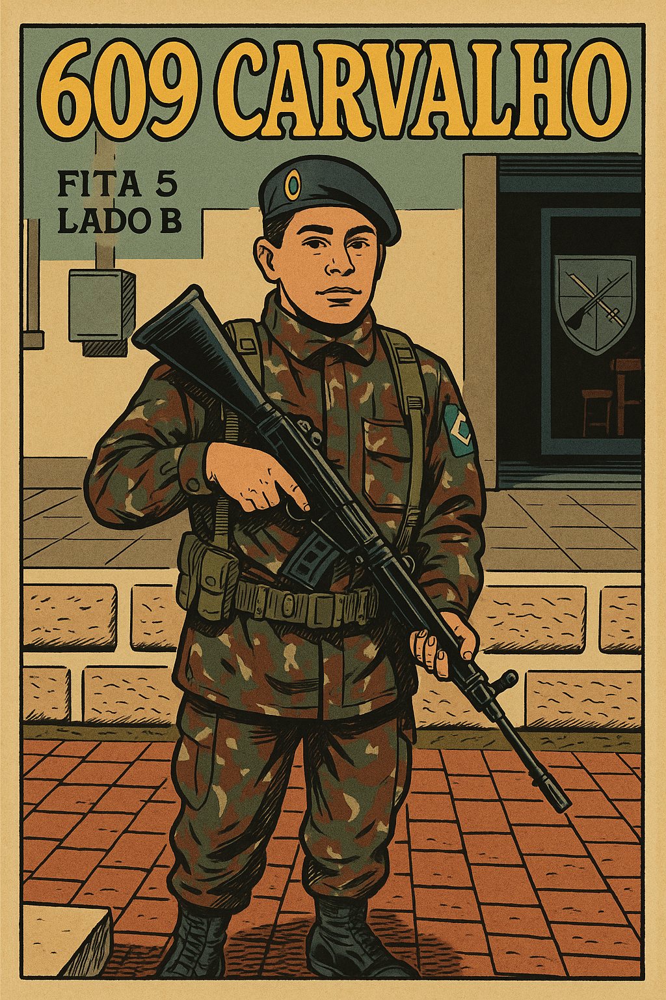

❝ Pra quem disse que eu ia sair na terceira baixa, saí na primeira.
O soldado 609 Carvalho entrou em março de 2024 como soldado do efetivo variável na Base Administrativa da Guarnição de Santa Maria. Entretanto, Carvalho se envolveu em um acidente em 26 de maio de 2024. O que gerou uma abertura de uma sindicância com o resultado final sendo o Licenciamento A Bem Da Disciplina em 11 de Julho de 2024.
Guilherme é um homem extremamente triste e melancólico, sem mencionar seu problema alcoólatra.
Durante seus quatro meses de exército brasileiro, Carvalho trabalhou na seção do EB F@cil.
Carvalho virou lenda de pernoites e sua história continua a ser contada até os dias atuais.

A sua história de soldado teve um fim injusto e inacreditável.
Após a sua expulsão injusta, Carvalho fez um projeto de podcast contando a sua própria história de soldado, porém seus podcasts não fizeram sucesso.
LOVSER STORY
O programa se chamou LOVSER STORY, o nome vem de LOVER se tornando LOSER, que indica que de AMOR se tornou PERDA. As gravações de Carvalho contam sobre a sua própria jornada histórica dentro das Forças Armadas Brasileiras e os seus desafios enfrentados.
Portanto, algumas de suas gravações não foram postadas a público como alguns de seus episódio postados no Spotify, mas foram recentemente encontrados salvos no Wayback Machine.
Os episódios podem ser encontrado em seu próprio website em LOVSER STORY.
Veja aqui a ordem correta e cronológica de seus episódios:
Entre outros projetos pode-se apontar que Carvalho fez um grande projeto de notícias e revelações em um site denominado inicialmente de MirrorNews. No domínio de big-loser.site. O site está offline, porém seus records ainda estão salvos no internet archive.
Fita 5 Lado B

Além do seu projeto de fitas que expõem a sua versão da história de soldado, Carvalho também fez um projeto que arquiva páginas da internet e o projeto continua expandindo cada vez mais. Dê uma olhada em 004 Archived Media.

004 Archived Media©
archived 30 Jul 2025 22:57:50 UTC
Redes sociais:

Gui

guilherme_2k5

404_ERROЯ